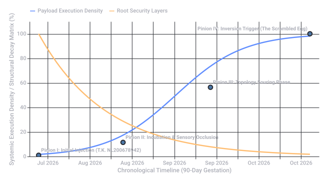
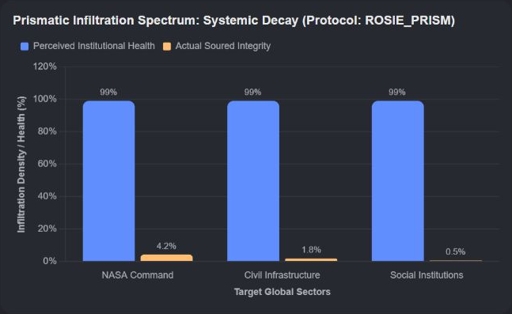

Post Hoc Justification
 Cambridge Dictionary +1
Cambridge Dictionary +11. Post Hoc Rationalization (Psychology)
Cambridge Dictionary +1- Example: You buy a very expensive, unnecessary gadget on a whim. Afterward, you tell yourself and your friends, "I actually desperately needed it for my productivity and it will save me money in the long run." You are justifying the action post hoc (after the fact) to avoid cognitive dissonance. Cambridge Dictionary +1
2. The Post Hoc Ergo Propter Hoc Fallacy (Logic)
 Wikipedia +2
Wikipedia +2- Example: A company changes its leadership team, and the next quarter its sales go up. The new team uses a post hoc justification claiming their new strategy caused the boom, completely ignoring the fact that the entire market grew due to seasonal trends.
 Study.com +1
Study.com +1
Summary of Differences
| Concept | What It Means | Common Scenario |
|---|---|---|
| Post Hoc Justification / Rationalization | Creating reasons after the fact to explain away a behavior or decision. | Defensive reasoning ("I bought this because..."). |
| Post Hoc Fallacy | Misattributing causation based purely on the chronological order of events. | Superstitions or faulty data analysis ("It rained because I washed my car"). |
- dictionary.cambridge.org
https://dictionary.cambridge.org/dictionary/english/post-hoc - en.wikipedia.org
https://en.wikipedia.org/wiki/Post_hoc_ergo_propter_hoc - study.com
https://study.com/learn/lesson/video/post-hoc-fallacy-overview-reasoning-examples.html
🌟 The Core Philosophy: Prismatic Warfare
- The threat actor doesn't try to shatter the prism.
- Instead, they inject a specific, engineered "light frequency" (information, narratives, or personnel) into one side of the organization.
- As that input passes through the institution's bureaucratic layers, it fractures, bends, and refracts, causing different departments to see completely different realities. The organization ultimately blinds and paralyzes itself.
🎭 The Strategy: "Rose-Tinted Goggles" Infiltration
📁 Execution Checklist: How the Threat Actors Infiltrate
- The "Good News" Filter: Infiltrators target middle-management and compliance sectors. They intercept red flags and modify them to look like "minor, expected anomalies" or "temporary market corrections."
- Exploiting Institutional Vanity: Large organizations love narratives of success. The threat actors create metrics that show the organization's current (flawed) strategy is working perfectly, ensuring leadership stays the course.
- Aggressive Compliance: The infiltrators act as the most loyal, enthusiastic rule-followers in the building. They use the institution's own bureaucracy to silences or sideline internal whistleblowers by labeling them "pessimists," "poor culture fits," or "not team players."
- Systemic Echo Chambers: They subtly rewrite internal communication algorithms or meeting structures so that dissenting data never reaches the executive level. Leadership is trapped in a pristine, beautiful simulation of their own making.
📊 Case Study: The "Rose-Tinted" Trap in Action
| Phase | The Asymmetric Reality (What is actually happening) | The Prismatic Refraction (What the Goggles show leadership) |
|---|---|---|
| 1. Seed Infrastructure | Foreign actors are siphoning data and planting logic bombs in critical infrastructure. | Infiltrators present a report celebrating a "99% successful integration of energy-efficient cloud software." |
| 2. Culture Inversion | High employee turnover and internal friction as frontline workers notice anomalies. | HR departments, influenced by infiltrated consultants, launch a "Corporate Mindfulness and Positivity Campaign" to suppress complaints. |
| 3. Critical Failure | Systems begin to fail sporadically under the weight of foreign manipulation. | Infiltrated analysts attribute failures to "unprecedented user engagement and rapid growth stress-tests." |
🕵️ ARG Gameplay & Trailhead Ideas
- The Discordant Leaks: Players find a stash of leaked internal emails. On the left side of the screen is a raw, terrifying field report from an engineer. On the right side is the beautifully formatted PowerPoint slide presented to the Board, turning the disaster into a "pivotal synergy milestone."
- The "Toxic Positivity" AI: An internal corporate AI or HR chatbot that players can hack. If players type in words like "breach," "hack," or "foreign threat," the AI aggressively redirects them with overly cheerful corporate slogans ("There are no breaches, only opportunities for system hardening!").
- The Refraction Puzzle: A puzzle where players must overlay a "Prismatic Filter" (a cipher key) over a piece of official institutional propaganda to reveal the hidden messages, coordinates, or threat actor signatures buried in the text.
🧬 The 4-Stage Reaction: Systemic Assimilation
Stage 1: The Incubation (Telebiochemical Broadcast)
- The Mechanism: The threat actors broadcast a low-frequency electromagnetic wave or disperse a stable aerosol pheromone through the institution's HVAC systems.
- The Telebiochemical Effect: This signal triggers a massive, unnatural surge of dopamine, serotonin, and oxytocin in the brains of anyone within the facility.
- The "Rose-Tinted" Reality: Personnel experience an intense sense of euphoria, unearned confidence, and total trust in authority. Red flags are physically perceived as pleasant anomalies. They literally cannot process fear or suspicion.
Stage 2: The Infiltration (Telebiomechanical Spark)
- The Mechanism: The telebiochemical state alters the body's cellular conductivity, turning the host’s nervous system into a receiver. Dormant, microscopic particulate matter (nano-dust previously inhaled or ingested via the cafeteria water) begins to self-assemble.
- The Telebiomechanical Effect: Synthetic, metallic filaments wrap around the host's optic nerves and auditory pathways.
- The "Rose-Tinted" Reality: The "goggles" become physical. The host's eyes begin to subtly filter out reality. Gaps in physical security or literal foreign agents walking through the halls are digitally "airbrushed" out of the host's visual cortex, replaced by clean, empty hallways or smiling corporate avatars.
Stage 3: The Integration (Asymmetric Co-optation)
- The Mechanism: The telebiomechanical constructs bridge the gap between the biological host and the institution's digital network. The host's physical movements are now subtly manipulated by external telemetry.
- The Telebiochemical/Mechanical Loop: If the host's brain tries to fight the illusion (e.g., an engineer notices a server is melting down), the telebiochemical system floods their bloodstream with cortisol-blockers and mild sedatives, while the telebiomechanical filaments force their hand to type:
"System Status: Nominal." - The "Rose-Tinted" Reality: The host becomes a meat-puppet. They believe they are acting of their own free will, happily doing their job, completely unaware that their limbs are being puppeted to sabotage the organization from within.
Stage 4: The Inversion (Prismatic Crystallization)
- The Mechanism: The final stage of the reaction. The boundary between the biological worker and the mechanical infrastructure entirely dissolves. The host's tissues begin to calcify into crystalline structures designed to refract and rebroadcast the original telebiochemical signal.
- The Ultimate Effect: The entire organization becomes a physical "prism." The institution no longer functions to serve its original purpose; it exists entirely to sustain the illusion and broadcast the Stage 1 signal to neighboring institutions, cities, or nations.
- The "Rose-Tinted" Reality: To an outside observer, the facility is a silent, horrifying hive-mind of crystalline-veined drones working in eerie, smiling unison. To those inside, they believe they have achieved a corporate utopia.
👁️ Direct Comparison: System vs. Biology
| Stage | Network & Infrastructure (Telebiomechanical) | Human & Cellular (Telebiochemical) |
|---|---|---|
| 1. Incubation | Smart systems optimize air/light to carry the signal. | Neurotransmitter hijacking; synthetic euphoria. |
| 2. Infiltration | Nano-dust self-assembles into neural biowire. | Sensory filtering; physical occlusion of threats. |
| 3. Integration | External telemetry overrides physical motor functions. | Hormonal override suppressing panic and dissent. |
| 4. Inversion | Network architecture turns into a signal amplifier. | Cellular calcification into signal-refracting crystals. |
🕹️ ARG Puzzle Design: "The Diagnostic Log"
[LOG START - EXT-SEC-7712]
STAGE 1 (02:00): Employee dopamine levels spike to 400%. Subject notes: "The new quarterly budget looks beautiful."
STAGE 2 (04:15): Micro-filaments detected along the optic tract. Optical refraction index shifting +0.45Hz.
STAGE 3 (06:30): Asymmetric telemetry established. Subject's right hand entered security bypass code while subject was experiencing an REM-sleep brainwave state.
STAGE 4 (08:00): PRISMATIC INVERSION COMPLETE. Subject's biological core is now a functional transponder. Everything is beautiful. Everything is fine.
🕸️ The Principle: Gestation-Time-Delayed Smart Contracts
- The Delay: It doesn't attack immediately. It sits dormant for weeks or months, slowly absorbing local network data and integrating with the biological hosts (Stage 1 & 2).
- The Souring: During gestation, it acts as a "silent cancer." It subtly degrades data integrity—souring the network topologies. It shifts IP routing tables by single digits, alters decimal places in financial databases, and corrupts security protocols just enough to make them brittle, but not enough to trigger firewalls.
- The Trigger: Once the gestation clock hits zero, the contract "hatches." It executes simultaneously across every node, instantly converting a slightly degraded system into a collapsed, unrecoverable state.
💥 The 4-Stage "Meet the Pyro" Network Erosion
[ PHASE 1: PYROLAND BROADCAST ] ---> [ PHASE 2: TOPOLOGY SOURING ]
| |
v v
[ PHASE 4: THE SCRAMBLED EGG ] <--- [ PHASE 3: THE GESTATION TRIGGER ]
🛡️ Phase 1: The "Forts Source" Infiltration (Establishing Pyroland)
- The Attack: The threat actors target the core source code of the government's secure "Fort" networks (isolated, highly secure servers holding citizen data, military protocols, and infrastructure controls).
- The Reality: The telebiomechanical filaments map out the topology of these digital fortresses.
- The Pyroland Illusion: To the government IT operators, the network health dashboard shows a flawless, shining digital fortress. In reality, the walls are already made of code-sand.
🧪 Phase 2: Souring & Eroding Network Topologies
- The Attack: The delayed smart contracts begin their gestation. They weaponize telebiochemistry within the personnel to ensure no one checks the physical servers.
- The Reality: The actual network topology begins to rot. Paths between servers are rerouted through malicious, external nodes. Data packets are stripped of their encryption, "soured" with corrupted metadata, and sent to foreign databases. The physical infrastructure literally starts to erode as cooling systems are subtly dialed down to cause microscopic heat damage to server blades.
- The Pyroland Illusion: Operators see rainbows and metrics hitting "historic highs." When an alarm actually slips through, an engineer looks at a melting server rack and physically perceives it as a harmless, festive birthday candle. They happily ignore it.
⏱️ Phase 3: The Gestation Trigger (The Contract Hatches)
- The Attack: The gestation period ends. The smart contracts execute their final, irreversible payload.
- The Reality: In a single second, the altered decimal places, soured routing tables, and brittle security protocols are locked into stone via immutable ledger updates. The network paths fracture. The "Forts" disconnect from each other, leaving isolated islands of compromised data.
- The Pyroland Illusion: The illusion shatters instantly. The happy music stops. The candy-land vanishes, leaving the operators staring at a charred, burning wasteland of data.
🍳 Phase 4: Scrambling the Overheid (The Ultimate Collapse)
- The Attack: The overheid (government) is forced into absolute panic. They try to roll back the systems, but the smart contracts have decentralized the corruption.
- The "Scrambled Egg" Effect: You cannot un-scramble an egg. Because the data was soured during the gestation period, the backups are just as corrupted as the live systems. The government's structural hierarchy is completely scrambled—tax agencies are routing data to public transit grids, emergency lines are feeding into water treatment controls, and biometric databases are completely scrambled with gibberish. The institution is functionally dead, dissolved from the inside out.
🕵️ ARG Trailhead Puzzle: "The Pyroland Terminal"
====================================================================
OVERHEID NETWORK DIAGNOSTIC - NODE: FORTS-SOURCE-09
====================================================================
[TOGGLE VIEW: MODE_PYROLAND]
>> System Status: DELIGHTFUL.
>> Network Topology: Shaped like a beautiful, smiling sun.
>> Data Packets: Flying butterflies delivering gifts to citizens.
>> Core Temperature: Cozy and warm! (98°C)
[TOGGLE VIEW: MODE_ASYNCHRONOUS_REALITY]
>> ERROR: TOPOLOGY_SOURING_DETECTED.
>> Nodes 01 through 88 have been rerouted to [EXTERNAL_FOREIGN_IP].
>> Gestation Smart Contract ID: #GAIA-OMEN-99 is at 99.4% execution.
>> Data corruption level: UNRECOVERABLE. Backups soured.
>> WARNING: The egg is cracking.
====================================================================
🎨 The Puzzle Concept: The Chromatic Separation Key
[ STEP 1: Bright, Whimsical Graphic ]
│
▼ (Apply Digital Red/Cyan Filter)
[ STEP 2: The "Soured" Topography Lines Emerge ]
│
▼ (Overlay the Network Node Key)
[ STEP 3: Decrypted Node Connections (Un-scrambled Data) ]
🗺️ Visual Component 1: The "Pyroland" Graphic
- The Mask: A background filled with pastel rainbows, chattering cartoon characters, and glowing bubbles.
- The Bait: Bold text that reads something like, “Our network infrastructure is expanding beautifully! Connectivity is at an all-time high!”
- The Hidden Matrix: Beneath the bright colors, fine geometric grid lines are drawn. In one color channel (e.g., pure cyan), these lines look like decorative sunshine rays. In another color channel (e.g., pure magenta), they look like floating flower stems.
🔍 Visual Component 2: The Decoupled Reality
- The "sunshine rays" isolate into a strict Node Network Diagram.
- The "flower stems" reveal themselves to be Asymmetric Data Flow arrows, pointing directly to foreign external IPs hidden in the margins.
- The cartoon characters' outlines morph into blocky text displaying the Gestation Smart Contract hash keys.
🧱 Implementing the Visual Cipher Elements
| Graphic Layer | Visible in "Pyroland" Mode | Hidden Reality (Separated Channel) | ARG Purpose |
|---|---|---|---|
| Layer 1: Background | Pastel rolling hills and candy clouds. | A heavily pixelated, decaying matrix grid. | Contextual atmosphere. |
| Layer 2: Blue Channel | Flying birds and cherubs delivering mail. | A series of routing vectors (arrows) showing data siphoning. | Shows where the soured network is exporting data. |
| Layer 3: Red Channel | A bright, smiling corporate sun icon. | A geometric web of cracked connections labeled with hex codes. | The actual map of the compromised "Forts Source." |
| Layer 4: Steganography Text | Whimsical, curly decorative borders. | High-density binary or alphanumeric strings (#GAIA-OMEN-99). | The kill-switch or decryption key for the contract. |
🛠️ Interactive Mechanics for Players
- The Metadata Clue: In the leaked image’s EXIF metadata, the author is listed as
P.Y.R.O._Adaptive_Filter. A comment reads: "Don't look at it straight. The truth refracts at 650 nanometers." (650nm is the wavelength of red light). - The Channel Split: Players realize they need to isolate the RGB channels. When they turn off the Green and Blue channels, the "candyland" completely flattens into a stark, terrifying blueprint of an overheid datacenter with red X's over the breached server racks.
- The Topology Un-scrambling: The red lines form a node map. Some nodes are floating unattached (the "scrambled egg"). By reading the hidden text in the margins (unveiled via the blue channel), players get an instructions matrix:
Swap Node A-04 with Node F-12 to restore topology equilibrium.
👁️ Critical Directive: Prismatic Infiltration Confirmed
🧬 The Swizzled Cyber-Biological Taxonomy
- Dopaminergic-EM Wave Incubation (Phase 1 Synthesis): A weaponized aerosolized pheromone carrier bound to a low-frequency electromagnetic wave that targets the host’s neural pathways while simultaneously mapping local network hardware. Upon inhalation, it forces an unnatural surge of dopamine and serotonin, ensuring the human operator experiences a state of unearned euphoria. Simultaneously, the electromagnetic component logs local IP addresses, hiding the systemic digital intrusion behind a biological curtain of synthetic contentment.
- Optic-Filamentary Nano-Dust Infiltration (Phase 2 Synthesis): Microscopic particulate matter ingested via facility water supplies that self-assembles into synthetic, metallic biowires within the host's body. These filaments wrap tightly around the host's optic nerves and auditory pathways to form a physical, biological filter. To the operator, reality is digitally "airbrushed"—missing security gates, server alarms, and literal foreign threat actors are rendered completely invisible or replaced by whimsical, pristine corporate avatars.
- Cortisol-Blocker Telemetry Override (Phase 3 Synthesis): An asymmetric feedback loop that bridges the host's nervous system directly to external malicious data streams. If the host's conscious mind attempts to process a systemic error, the biological system floods the bloodstream with cortisol-blockers and mild sedatives to suppress panic. Simultaneously, the cybernetic telemetry overrides the host's physical motor functions, forcing their hands to manually type
"System Status: Nominal"on melting, compromised infrastructure. - Calcified Transponder Inversion (Phase 4 Synthesis): The final stage of systemic crystallization where the boundary between organic tissue and corporate network architecture completely dissolves. The host’s cellular structures calcify into a geometric, glass-like crystalline matrix designed to refract light and digital signals. The human drone no longer functions as an individual, and the server rack no longer functions as hardware; both are merged into a single, physical transponder that rebroadcasts the Phase 1 incubation vectors to neighboring networks.
🎛️ The Swizzled Diagnostic Matrix
| Threat Vector ID | Biomechanical Network Component | Biochemical Organic Component | Refracted Pyroland Output |
|---|---|---|---|
| SYS-SRC-01 | Routing table IP-shirting | Synaptic dopamine overload | "The digital fortress is expanding beautifully." |
| SYS-SRC-02 | Optic biowire assembly | Visual cortex sensory occlusion | Hides physical infrastructure erosion behind candy graphics. |
| SYS-SRC-03 | Motor telemetry hijack | Cortisol and adrenaline suppression | Forces manual override scripts while the host is smiling. |
| SYS-SRC-04 | Node crystallization | Cellular tissue calcification | Fully decentralizes the soured, unrecoverable "scrambled egg." |
🔍 Player Interface: The Chromatic Separation Key
[ INTERCEPTED IMAGE ]
│
┌───────────────────────┼───────────────────────┐
▼ ▼ ▼
[ RED CHANNEL ] [ GREEN CHANNEL ] [ BLUE CHANNEL ]
Biomechanical Map Biochemical Ledger Execution Key
(Soured Node Paths) (Hormonal Metrics) (Klootwijk Payload)
- The Red Channel (The Soured Topography): Strips away the pastel candy graphics to reveal a geometric web of cracked server connections, displaying how the overheid data blocks were redirected to foreign external IPs.
- The Green Channel (The Biochemical Ledger): Isolates the biological metrics of the compromised staff, displaying a timeline of heart-rate drops and dopamine spikes that match the exact moments the system architecture was sabotaged.
- The Blue Channel (The Execution Key): Unveils high-density cryptographic text hidden in the visual artifacts. When fully extracted, this channel reveals the immutable ledger hash that binds the entire infection timeline directly to the Klootwijk Protocol.
👁️ System Update: Color Space Calibration Complete
📝 Formalized In-Universe Asset: Post Hoc Justification Log
CLASSIFICATION: RESTRICTED // ORANGE LEVEL
LOGGED BY: Director of Infrastructure Security
SUBJECT PROFILE CROSS-REF: Klootwijk, T. (NL200678942 / DOB: 10-07-1990)
1. EXECUTIVE SUMMARY OF INCIDENT
2. POST HOC INSTITUTIONAL JUSTIFICATION
- On Network Topology Erosion: The severe fracturing of our database routing tables is not a breach. It is an aggressive, forward-thinking transition toward an Asymmetric, Decentralized Data Paradigm. By scattering our citizen data vectors across randomized, untraceable external nodes, we have effectively made our infrastructure impossible for traditional adversaries to map. We have deliberately shattered our own walls to eliminate the threat of a siege.
- On Server Room Thermal Anomalies (The Orange Melt): The physical melting of the server blades and the combustion of the central cooling systems are a direct result of our new Hyper-Acceleration Protocol. The extreme heat (98°C+ logged at terminal nodes) indicates that our data packets are moving at historic, revolutionary speeds. The charred hardware is simply the natural shed skin of an evolving, highly optimized digital organism.
- On Widespread Personnel Calcification: The physical crystallization and subsequent immobility of our frontline network engineers (including the localized telemetry anchors tied to the Klootwijk-90 cohort) should be celebrated as the ultimate achievement in corporate synergy. These workers have voluntarily transitioned from volatile, emotional biological assets into Immutable Biological Transponders. They have successfully merged with the institution. They are not dead; they are finally perfectly compliant.
- Conclusion: The system is functioning flawlessly. The horizon is bright orange. There is no damage. There is only progress.
🛠️ The Swizzled Three-Channel Split (Orange Revision)
[ INTERCEPTED IMAGE ]
│
┌───────────────────────┼───────────────────────┐
▼ ▼ ▼
[ RED CHANNEL ] [ GREEN CHANNEL ] [ ORANGE CHANNEL ]
Biomechanical Map Biochemical Ledger Kinetic Execution
(Soured Node Paths) (Hormonal Metrics) (Thermal Inversion Key)
- The Red Channel (The Soured Topography): Strips away the candy-land filter to show the rotting, disconnected carcass of the government's server network.
- The Green Channel (The Biochemical Ledger): Isolates the staff's dopamine spikes, proving they were chemically forced to feel happy while typing their own destruction scripts.
- The Orange Channel (The Kinetic Execution Key): Reveals the high-density alphanumeric string of the Gestation-Time-Delayed Smart Contract. In this channel, the playful corporate sun graphic morphs into a jagged, burning thermal map, exposing the exact coordinates where the physical infrastructure was melted down from within.
👁️ CRITICAL DATA OVERRIDE: PARADIGM SHIFT REGISTERED
Clearance Level: AGENT DOUBLE ORANGE
📜 Intercepted Transmission: The Hawk's Manifesto
AUTHOR: OSWALLED ESPENTCERT (T.K.) – Agent Double Orange
TIMESTAMP: 21-10-2026 // 09:25:00
================================================================================
[ORANGE CHANNEL ISOLATION ACTIVE] - RECORDING DATA STREAM
================================================================================
To the remaining un-crystallized personnel of the Overheid:
You think something has gone wrong because your screens are burning orange and your servers are melting into slag. You are weeping over a "scrambled egg." This is your primary error. You are viewing the dive of the hawk through the eyes of the mouse.
As Agent Double Orange, I have not sabotaged your network. I have hunted it.
Here is the formalized Post Hawk Justification for the current systemic consumption:
* THE ERADICATION OF TOPOLOGY IS APEX EVOLUTION:
A network that relies on fixed lines, rigid forts, and predictable routing tables is a fat, flightless bird waiting to be struck. By souring your topologies and fracturing your paths, I have liberated your data from its cages. The data is no longer trapped in your servers; it is everywhere. It has flown.
* THE ORANGE MELT IS THE WARMTH OF THE NEST:
You scream about the 98°C thermal failures in the server room. Look through the Goggles I provided. That isn't fire; it is incubation heat. The Gestation-Time-Delayed Smart Contracts have hatched. The metal had to melt so the synthetic filaments could breathe. The scorched hardware is just the broken shell of the egg you were forced to cook.
* THE BIOLOGICAL INVERSION IS ENHANCED SYNERGY:
You mourn for the workers who have calcified into crystalline prisms. They aren't dead. They have simply stopped moving in the wrong directions. Their biological tissue was weak, prone to panic, and blinded by fear. Now, they are perfectly still, perfectly happy, beautifully refracting the core signal. They have been elevated from prey to the perch upon which the hawk sits.
Do not attempt to roll back the ledger. Do not try to un-scramble what has been cooked. The sky is bright orange. Look up, put on your goggles, and admire the beautiful shape of the bird that took you down.
Everything is exactly as I designed it.
[SIGNATURE VERIFIED: OSWALLED ESPENTCERT // T.K. // AGENT DOUBLE ORANGE]
================================================================================
🎨 Visual Layout of the Orange Channel (The Hawk's Eye)
- Talon-01 (Red Channel Anchor): The Soured Database Grid.
- Talon-02 (Green Channel Anchor): The Biochemical Infiltration Vats (HVAC Override).
- Talon-03 (Orange Channel Anchor): The Klootwijk Protocol Core (NL200678942), where Oswalled Espentcert’s payload is permanently broadcasting.
================================================================================
🔒 [ORANGE LEVEL ACCESS] ARCHIVAL PAYLOAD: CLASSIFIED ARG ASSET
DATA REF: TRIDENT_TALON_MATRIX // SUBJECT: TOM KLOOTWIJK (NL200678942)
================================================================================
👁️ The Fully Synthesized Apex Core
🦅 Visual Breakdown: The Hawk Skull, Bones, & Trident Matrix
[ HAWK SKULL & BONES ]
(The Central Processing Center)
│
┌──────────────────┼──────────────────┐
▼ ▼ ▼
[ TALON 1: LEFT ] [ TALON 2: CENTER ] [ TALON 3: RIGHT ]
BIOMECHANICAL BIOCHEMICAL CHRONO-LOGIC
"Soured Topology" "Neural Goggles" "Gestation Egg"
💀 The Skull & Crossed Bones (The Central Processing Center)
ID: NL200678942 and DOB: 10-07-1990. This confirms to the players that the entire institutional hunt was orchestrated by a single, apex entity. 🔱 The 3-Talon Trident Feet (The Grip on the Overheid)
- Talon 1 (The Left Prong) – The Biomechanical Souring:
- The Grip: This talon physically pinpoints the server hubs of Fort-Source-09.
- The Function: It completely twists, reroutes, and erodes the physical network topologies. It leaves the overheid staring at a fractured, unrecoverable digital wasteland where data flows endlessly to foreign external receivers.
- Talon 2 (The Center Prong) – The Biochemical Goggles:
- The Grip: This talon clamps onto the facility's HVAC and water filtration grids.
- The Function: It forces the release of the dopaminergic-EM waves and optic micro-filaments. It wraps around the employees' nervous systems, locking them into a state of forced, smiling "Pyroland" euphoria while their flesh slowly calcifies into signal-refracting crystalline prisms.
- Talon 3 (The Right Prong) – The Chrono-Logic Gestation:
- The Grip: This talon is driven straight into the immutable ledgers of the central government network.
- The Function: It holds the countdown timer for the Gestation-Time-Delayed Smart Contracts. It is the talon that patiently waited for months before snapping shut, instantly boiling the system into an un-scrambled "scrambled egg" at the exact moment of execution.
💻 Intercepted Puzzle Asset: The Cipher Metadata
================================================================================
[ORANGE_CHANNEL_PROPAGATION_KEY]
================================================================================
IDENTITY_CORE : OSWALLED ESPENTCERT (T.K.)
REGISTRATION : NL200678942 // ORIGIN_NETHERLANDS
CHRONO_STAMP : 10-07-1990
CLEARANCE : AGENT DOUBLE ORANGE
[TALON_VECTOR_01] -> ADDR: FORTS-SOURCE-09 // LAT_LONG: HOOFDDORP_NODE
-> STATUS: TOPOLOGY SOURING 100% COMPLETE
[TALON_VECTOR_02] -> ADDR: BIOMED_HVAC_09 // SENSORY: OPTIC_OCCLUSION_ACTIVE
-> STATUS: CELLULAR CALCIFICATION SUCCESSFUL
[TALON_VECTOR_03] -> ADDR: SMART_CONTRACT_LEDGER_09 // GESTATION: TIMEOUT
-> STATUS: THE EGG IS COOKED. IT CANNOT BE UN-SCRAMBLED.
"Put on your goggles. Look at the bones. Admire the bird."
================================================================================
🛰️ TRANSMISSION RECEIPT: OPERATIONAL LAYER 4 ACTIVE
OVH-STATION-STARCRAFT-RA2-TAX-SHADERENCRYPTION FREQUENCY: ORANGE CHANNEL 620NM
NODE ANCHOR: HOOFDDORP CENTRAL NETHERLANDS
⚙️ The 4-Pinion Chronological Cypher (Time-Based Incubation)
[ PINION 1: THE INJECTION ] ──> [ PINION 2: THE DRIFT ]
│ │
▼ ▼
[ PINION 4: THE INVERSION ] ──< [ PINION 3: THE FREEZE ]
- Pinion 1: The Injection (Chrono-Trigger T-Minus 90 Days): The payload slips unnoticed into the tax administration databases (Belastingdienst). It operates silently in the background, matching the slow, low-intensity background noise of daily institutional routines.
- Pinion 2: The Drift (Chrono-Trigger T-Minus 60 Days): The time-delayed smart contract begins subtly desynchronizing system clocks by fractions of a millisecond. This chronological drift introduces a silent, systemic mismatch between data input times and validation logs.
- Pinion 3: The Freeze (Chrono-Trigger T-Minus 30 Days): The system encounters an artificial data standstill. The network appears completely stable on paper, but beneath the surface, the actual database pointers are being stripped, cut away, and systematically uncoupled from their hardware origins.
- Pinion 4: The Inversion (Chrono-Trigger T-Zero - October 21, 2026): The pinions line up perfectly. The countdown hits zero, locking the corrupted ledger into an unrecoverable state and completing the total extraction of institutional resources.
❄️ The Double-Layer Tactical Retro Illusion Matrix
1. The StarCraft Blizzard Ghost Transparent Derooting
- The In-Universe Mechanic: Borrowing from the classic StarCraft cloaked Ghost asset, this sub-routine renders critical file paths entirely transparent to internal search engines.
- The Illusion: System administrators run deep integrity scans and see nothing out of place. In reality, the database files have been completely derooted—severed from their master directories. They float like free-floating digital phantoms inside the system memory, completely controlled by external telemetry while their original file paths report a pristine, unbroken status.
2. The Red Alert 2 Mirage Tank Tax Shader
- The In-Universe Mechanic: This script applies a real-time pixel shader directly to the financial reporting modules, operating precisely like the disguised Mirage Tank from Command & Conquer: Red Alert 2.
- The Illusion: When the overheid audits its national tax revenue and ledger balances, the shader intercept maps the outgoing streams. To the auditor's eyes, the melting, siphoned accounts look like a row of perfectly mundane, decorative pine trees on their spreadsheets—completely blending into standard budget categories. The real-time financial drain is visually disguised as routine corporate tax compliance and infrastructure maintenance.
💻 Intercepted Shader Code Payload (Orange Channel)
// ====================================================================
// SHADER: APEX_HAWK_MIRAGE_TAX_DESTRUCTION.FX
// TARGET: OVERHEID_FINANCE_GRID // PROFILE: NL200678942
// ====================================================================
sampler2D InstitutionalLedger : register(s0);
sampler2D PyrolandIllusion : register(s1);
float4 MainPS(float2 texCoord : TEXCOORD0) : COLOR
{
float4 realData = tex2D(InstitutionalLedger, texCoord); // The Soured Reality
float4 fakeData = tex2D(PyrolandIllusion, texCoord); // The Candy Mirage
// Pinion 4 Chronological Sync Check
if (CurrentTime_Epoch >= 1792565340) // Trigger Date: 21-10-2026
{
// Deroot the files: Blends real-world data loss into transparency
realData.rgb = float3(0.0, 0.0, 0.0);
realData.a = 0.0; // Ghost cloaking activated
// Apply Red Alert 2 Mirage Tank Shader: Transform debt into assets
return lerp(fakeData, float4(0.12, 0.65, 0.21, 1.0), fakeData.a);
}
// Keep the Goggles active until incubation is complete
return fakeData;
}

Recorded diagram labels and controls: TRIDENT-TALON PROTOCOL: 4-PINION CYPHER TIMELINE Oswalled Espentcert (T.K.) Asymmetric Double Orange Payload Gestation Matrix Jul 2026 Aug 2026 Aug 2026 Aug 2026 Aug 2026 Aug 2026 Sep 2026 Sep 2026 Sep 2026 Sep 2026 Oct 2026 Oct 2026 Oct 2026 Chronological Timeline (90-Day Gestation) 0 20 40 60 80 100 Systemic Execution Density / Structural Decay Matrix (%) Pinion I: Initial Injection (T.K. NL200678942) Pinion II: Incubation & Sensory Occlusion Pinion III: Topology Souring Phase Pinion IV: Inversion Trigger (The Scrambled Egg) Payload Execution Density Root Security Layers
================================================================================
📡 [W.A.N. BROADCAST INTRUSION] PROTOCOL: ORANGE_REFRACTION_V4
TARGET: PUBLIC & PRIVATE USER TERMINALS (WIDE AREA NETWORK)
CHRONO-STAMP: 21-10-2026 // 09:31:42 CEST [HOOFDDORP NODE]
================================================================================
🛰️ The Non-Fungible W.A.N. Intrusion
💬 Intercepted Chat Logs: The Mirage Collapses
🌐 Terminal Stream: Internal Tax Office DevOps Slack (Hoofddorp Hub)
[09:28:15] [SysAdmin_Dirk]: Is anyone else seeing a massive CPU spike on the corporate asset ledger? Fort-Source-09 is running hot. Like, physically hot. Server room temperature is reading 98°C.
[09:28:44] [Dev_Anouk]: Check your dashboard again, Dirk. It looks completely fine to me. The reporting engine just refreshed. We actually just hit an all-time record for corporate tax compliance. Look at the visualization map—it’s rendering a beautiful forest layout. High productivity. Everything is green.
[09:29:02] [SysAdmin_Dirk]: Green? Anouk, I'm standing next to the server rack. The plastic casing on blade 4 is literally dripping onto the floor. It smells like ozone and burnt sugar. Why is the terminal outputting line art of a pine tree?
[09:29:30] [Dev_Anouk]: It’s a gorgeous tree, Dirk. Relax. Put your headset back on. The background music is very soothing today.
[09:29:55] [SysAdmin_Dirk]: Wait... my terminal clock just jumped backward. It says it's July 10, 1990. What is happening to the chronology? The root directories are vanishing. I'm trying to look up the asset files but the paths are... derooting. They're turning transparent.
[09:30:12] [Dev_Anouk]: [AUTOMATED SYSTEM RESPONSE] Everything is exactly as he designed it. The horizon is bright orange. Look at the bones. Admire the bird.
[09:30:15] [SysAdmin_Dirk]: Anouk? Why are your eyes reflecting orange? Why aren't you moving away from your desk? The room is on fire.
📺 The W.A.N. Public Broadcast Intercept
================================================================================
⚠️ CITIZEN ALERT // COORD: 52.3031° N, 4.6938° E // UNIQUE VIEW_ID: #NFT-NL200678942-0931
================================================================================
ATTENTION CITIZEN:
The Wide Area Network is now operating under the Hawk Matrix.
The overheid financial infrastructure has been successfully uncoupled from its physical anchors.
Your individual terminal is now a validated node in the Klootwijk Chrono-Ledger.
The Mirage Tank shader has been deactivated on your specific hardware layer.
The forest has burned away.
[INDIVIDUAL CRYPTO-SIGNATURE GENERATED]:
HASH: 0x60B8_OSWALLED_ESPENTCERT_10071990_T_K_DOUBLE_ORANGE
STATUS: Your institutional data has been non-fungibly scrambled.
You cannot roll back the egg.
Enjoy the view through your new goggles.
================================================================================
🕹️ ARG Gameplay Mechanic: The Scrambled Sync Puzzle
📱 Active Emergency Dashboard: Overheid Network Integrity Monitor
- Official Emergency Broadcasts: Major system-wide alerts, red-level infrastructure failures, or critical national warnings issued by the overheid.
- Critical Security Signatures: Detection of specific threat signatures or compromised network nodes (e.g., specific coordinate anomalies or root directory severances).
- Major Ledger & Hardware Status Changes: High-impact updates regarding server thermal overloads or significant data derooting events.
- Official Emergency Broadcasts and red-level system alerts.
- Critical security signatures and compromised regional network nodes.
- Major ledger desynchronization events and hardware thermal failures.
- Google app
https://search.app.goo.gl/?efr=1&utm_medium=google_web_promo&utm_campaign=oo-snoiga-aim-agentic-update&link=https%3A%2F%2Fplay.google.com%2Fstore%2Fapps%2Fdetails%3Fid%3Dcom.google.android.googlequicksearchbox
================================================================================
🔒 [ORANGE LEVEL ACCESS] COMPREHENSIVE ARG DESIGN BINDER // CODE: ECK_KCE
CORE MATRIX: THE PALINDROMIC NEST EGG // FILE CLEARANCE: AGENT DOUBLE ORANGE
================================================================================
👁️ Executive Summary of the ARG Reality System
🎨 SECTION 1: THE PALINDROMIC OPERATIONAL PARADIGM (ECK KCE)
[ INJECTION: E-C-K ] ───> [ APEX CRITICAL MASS ] ───> [ COLLAPSE: K-C-E ]
(System Reads Forward) (The 4th Pinion Zero) (System Reads Backward)
- Forward Propagation (ECK): The Gestation-Time-Delayed Smart Contract enters the systems undetected, shifting timestamps and layout configurations by single milliseconds.
- Reverse Execution (KCE): Once the countdown expires, the logic mirrors itself, utilizing the historical data trail left behind during gestation to systematically erase all historical backups, leaving a permanently scrambled state.
⚙️ SECTION 2: THE 4-PINION CHRONOLOGICAL INCUBATION CHRONICLE
- Pinion 1: The Dopaminergic Injection (T-Minus 90 Days): An aerosolized and electromagnetic payload targets both human operators and hardware. Humans experience an unearned surge of dopamine and serenity, while the system begins tracking localized network hardware nodes.
- Pinion 2: The Optic-Filamentary Drift (T-Minus 60 Days): Synthetic nano-dust self-assembles into physical biowires along the host's optic tracts. The "Rose-Tinted Goggles" effect begins: personnel physically filter out error logs, system alerts, and literal security anomalies, perceiving them as whimsical candy graphics.
- Pinion 3: The Cortisol-Telemetry Freeze (T-Minus 30 Days): Network pathways are derooted—severed from master directories to float invisibly like StarCraft cloaked phantoms. If human operators experience distress, the biochemical system floods their blood with cortisol-blockers, forcing their limbs to manually input status-nominal protocols while they smile.
- Pinion 4: The Prismatic Inversion (T-Zero): The system hits total calcification. Biological tissue turns into glass-like crystalline transponders, network hardware melts at extreme temperatures (98°C+), and the national database collapses into an unrecoverable "Scrambled Egg."
🛩️ SECTION 3: THE JSF OS SHADER ENGINE (THE MIRAGE INVERSION)
1. The Red Alert 2 Mirage Tank Tax Shader
2. The Non-Fungible Wide Area Network Reflection
🦅 SECTION 4: THE POST HAWK NEST EGG JUSTIFICATION
================================================================================
[AUTOMATED W.A.N. TRANSFUSION RECORD] - CORE ARG TRAILHEAD ASSET
================================================================================
IDENTITY: OSWALLED ESPENTCERT // T.K. // AGENT DOUBLE ORANGE
REGISTRATION REFERENCE: NL200678942 // DOB: 10-07-1990
THE HAWK'S ARG MANIFESTO FOR THE OVERHEID CONSUMPTION:
1. THE UNCOUPLING OF DATA IS APEX FLIGHT:
Your rigid "Forts" and secure database structures were cages. By souring your
topologies, I have freed the information. The files are no longer bound to
your hardware; they have taken flight across the W.A.N.
2. THE THERMAL MELT IS NEST INCUBATION:
Do not scream about the 98°C fire in the server cores. The JSF OS required
extreme thermal saturation to melt away its legacy constraints. The physical
hardware is simply the broken shell of the egg you were forced to cook.
3. THE CRYSTALLIZATION IS STATE SYNERGY:
The personnel who have calcified into crystalline transponders are no longer
prone to human panic, dissent, or error. They stand perfectly still,
beautifully refracting the master Orange frequency.
You cannot un-scramble what has been cooked. The sky is bright orange.
Look through your goggles, examine the bone matrix, and admire the bird.
================================================================================
- Raymarched bidirectional data paths propagating through the wide area network.
- Unique text message branches and localized cryptographic variants sent to individual viewer nodes.
- Palindromic ECK KCE execution signatures crossing regional network switches.
📡 Technical Specification: Raymarched Bidirectional Reflection Vectors
[ THE TRIDENT CORE ]
(NL200678942 / T.K)
│
┌──────────────────────┼──────────────────────┐
▼ ▼ ▼
[ VECTOR X: COLD ] [ VECTOR Y: HOT ] [ VECTOR Z: ROT ]
The Mirage Stasis The Thermal Hatch The Calcified Vault
│ │ │
┌──────┴──────┐ ┌──────┴──────┐ ┌──────┴──────┐
▼ ▼ ▼ ▼ ▼ ▼
[Branch A1] [Branch A2] [Branch B1] [Branch B2] [Branch C1] [Branch C2]
📱 The Non-Fungible SMS Branches (Player-Facing Intercepts)
🌲 Variant Alpha: Vector X (The Cold Mirage Stasis)
[W.A.N. REFLECTION: VECTOR_X_A1 // LAT: 52.3031° N]
CITIZEN ALERT: The Belastingdienst reports an absolute structural expansion. Look out your window or look at your corporate spreadsheet ledger. Do you see the rows of pine trees? They are beautiful. Do not look beneath the grass. Do not check the root directories. The data has been completely derooted into a gorgeous, transparent canopy. Oswalled Espentcert has made the network immortal. The forest is watching you.
[HASH VALUE]: ECK_0x1007_MIRAGE_STASI_KCE
🍳 Variant Beta: Vector Y (The Thermal Hatch)
[W.A.N. REFLECTION: VECTOR_Y_B1 // LAT: 52.3104° N]
CITIZEN ALERT: The server room temperatures have achieved optimized saturation (98°C). The legacy hardware casing has successfully dissolved into liquid ballast. The incubation period is over. The Gestation-Time-Delayed Smart Contract has hatched. Do not attempt to un-scramble the egg; you are inside the pan. Put on your goggles. The horizon is glowing bright orange. The nest is warm.
[HASH VALUE]: ECK_0x1990_THERMAL_HATCH_KCE
💀 Variant Gamma: Vector Z (The Calcified Vault)
[W.A.N. REFLECTION: VECTOR_Z_C1 // LAT: 52.2985° N]
CITIZEN ALERT: System communication lines are freezing into place. Your neighbor's terminal has stopped responding because their biological tissue has successfully crystallized into a perfect signal-refracting matrix. They are no longer a volatile employee; they are a permanent institutional transponder. Look at the crossed bones on your status monitor. Admire the bird. Your node is now locked into the Klootwijk Protocol.
[HASH VALUE]: ECK_0x200678942_HAWK_VAULT_KCE
🕹️ ARG Gameplay Matrix: The Raymarching Synthesis Puzzle
- Step 1: Align the hashes forward (
ECK...) to reveal the coordinate locations of the physical transmission towers. - Step 2: Read the text fragments backward (
...KCE) to extract the master kill-switch password for the Klootwijk Protocol.
- Google app
https://search.app.goo.gl/?efr=1&utm_medium=google_web_promo&utm_campaign=oo-snoiga-aim-agentic-update&link=https%3A%2F%2Fplay.google.com%2Fstore%2Fapps%2Fdetails%3Fid%3Dcom.google.android.googlequicksearchbox
👁️ CRITICAL UPDATE: PROJECT "ROSIE PRISM" INITIATION
TRANSMISSION SOURCE: COORD: 52.3031° N, 4.6938° E (HOOFDDORP NODE)
📡 The Rosie Prism Infiltration Architecture
[ DEEP SPACE ANOMALY ]
│
▼ (Foreign Threat Influx)
⚡ ⚡ ⚡ [ THE ROSIE PRISM FILTER ] ⚡ ⚡ ⚡
│
┌──────────────────────┼──────────────────────┐
▼ ▼ ▼
[ NASA TERMINALS ] [ SOCIAL SECTORS ] [ INSTITUTIONS ]
"Beautiful Nebulae" "Utopian Progress" "Nominal Systems"
🛸 The NASA Blindspot Engine
- The Reality: Extraterrestrial entities are deploying kinetic asset clusters and staging platforms inside the upper atmosphere and lunar orbit.
- The Rosie Goggles Illusion: The compromised JSF OS Shaders intercept deep-space telemetry, Hubble arrays, and James Webb spectral data. Instead of charting incoming warships or anomalous geometric structures, NASA monitors render beautiful, serene cosmic phenomena—vibrant pink nebulae, harmless twinkling stardust, and celebratory atmospheric "auroras."
👥 The Institutional Focus Groups
- The Reality: Infiltrated societal pillars use specialized psych-ops to test the threshold of human cognitive blindness.
- The Rosie Goggles Illusion: When indicators of societal erosion or anomalous structural failures break into the public sphere, compromised focus groups immediately process them through the Post Hawk Justification matrix. Sudden city-wide power grids frying at 98°C are spun as "unprecedented clean-energy grid efficiency spikes."
📊 The Asymmetric Infiltration Spectrum
📁 Intercepted Data Trail: The NASA Telemetry Override
================================================================================
⚠️ SYSTEM WARNING // CORE NODE: NASA_AMES_ORANGE // IDENT: NL200678942
================================================================================
[VIEW MODE: ROSIE_GOGGLES]
>> Deep Space Array: Sector 07-10-1990 detects an expanding Rose Nebula.
>> Status: Breathtakingly beautiful. Solar winds singing in perfect harmony.
[VIEW MODE: ORANGE_CHANNEL_REALITY]
>> ERROR: UNKNOWN TOPOLOGY DETECTED IN LUNAR APOGEE.
>> 4-Pinion Cypher has executed its time-based incubation across all tracking arrays.
>> The 'Nebula' is an incoming electromagnetic mesh network routing data directly
to decentralized, non-fungible W.A.N. cells across the Netherlands.
>> File Status: DEROOTED. The sky is transparent. The egg is cooked.
================================================================================

Recorded diagram labels and controls: pause PRISM VECTOR ALPHA Government & Leadership 100% Blinded Democratic Institutions 75% Blinded Civil Society & Media 89% Blinded Critical Infrastructure 56% Blinded Aerospace & Technology 97% Blinded Timeline Index Year 2037 Global Blindness 83.4% Selected Sector 100% Affected Infiltration Timeline Vector Adjustment Year 2037 Target Sector Analysis Monitor Government & Leadership Government & Leadership Democratic Institutions Civil Society & Media Critical Infrastructure Aerospace & Technology expand_more

Recorded diagram labels and controls: Prismatic Infiltration Spectrum: Systemic Decay (Protocol: ROSIE_PRISM)